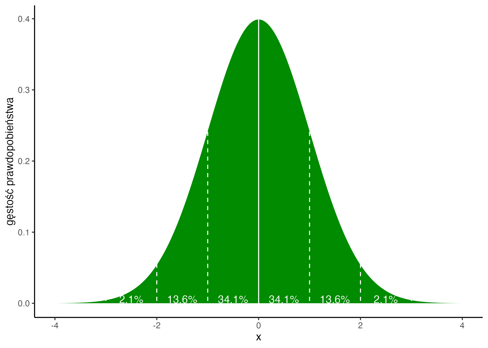
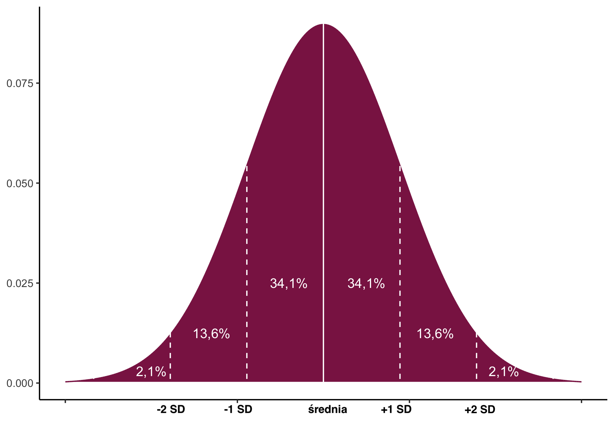
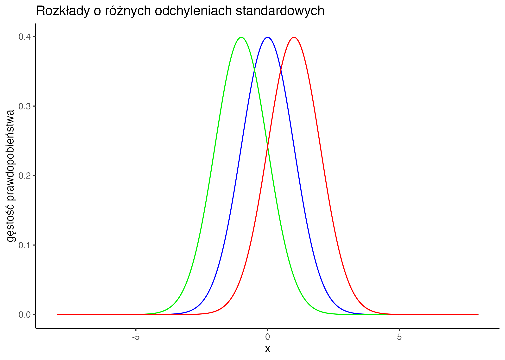
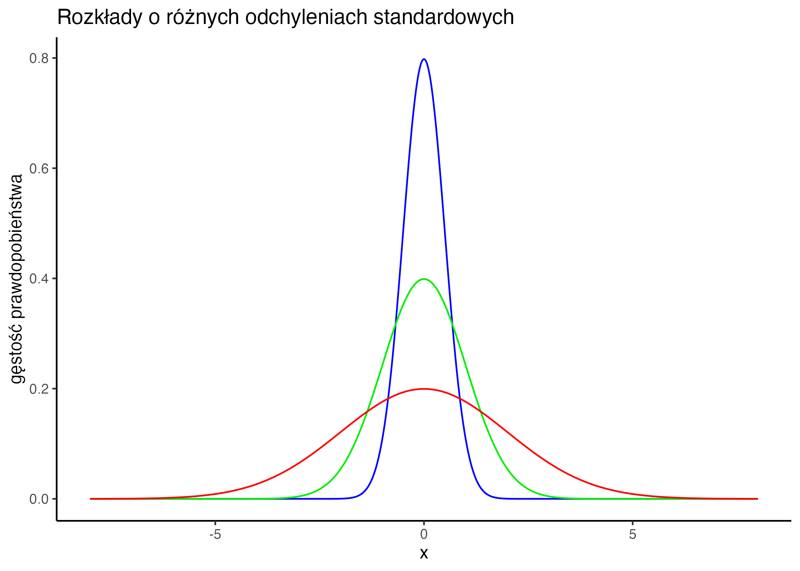
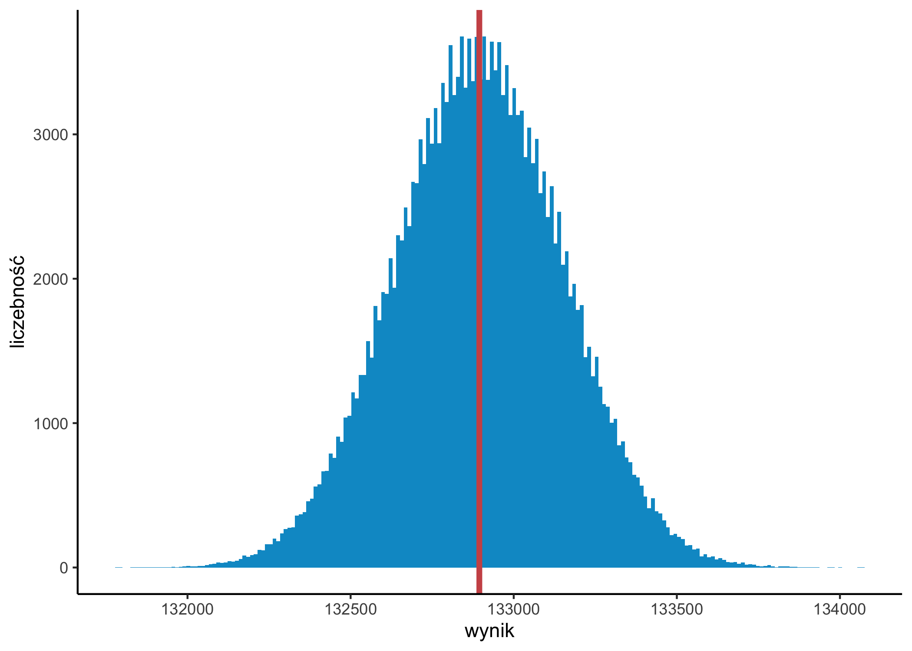
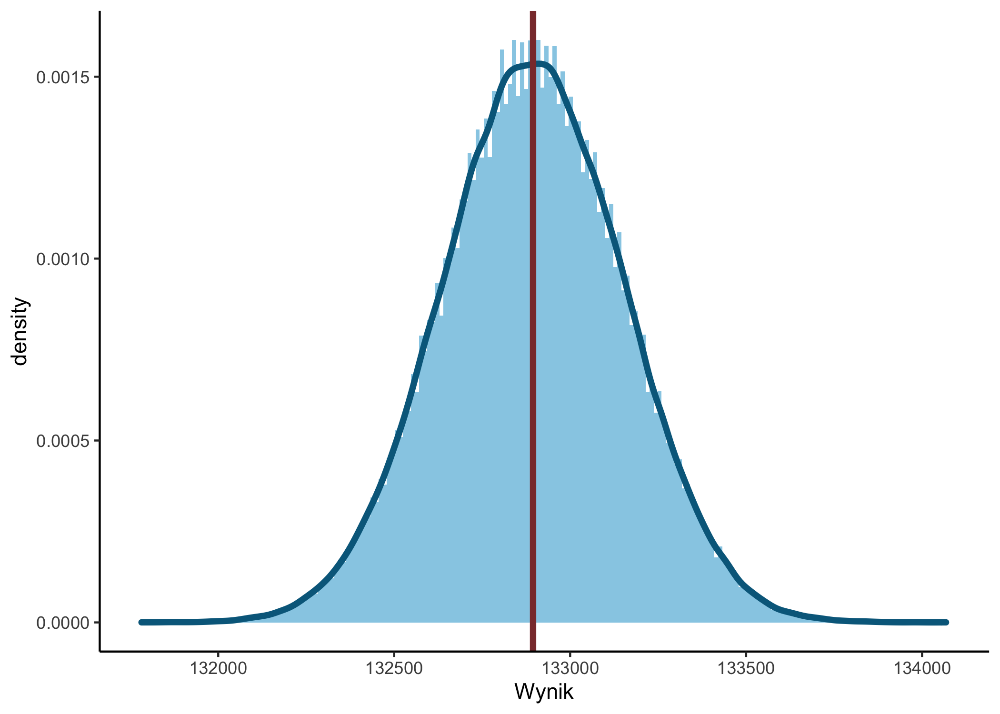
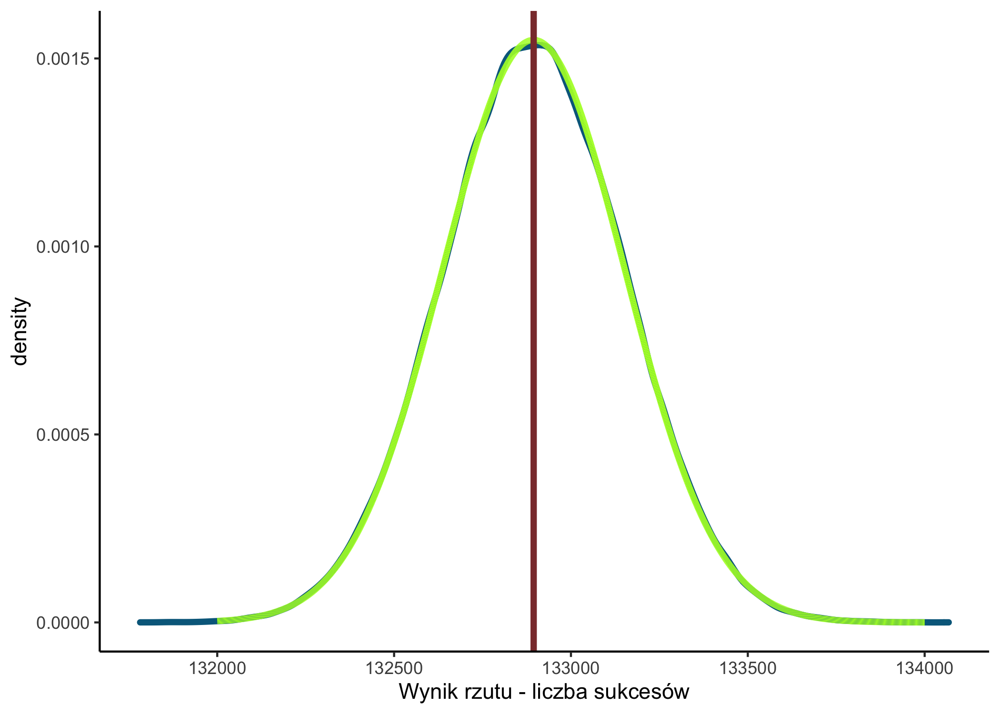

Rozkład w populacji
Jak dokładnie wynik uzyskany w naszej próbie odzwierciedla wynik w populacji?
- Nawet, jeżeli mamy idealnie dobraną, losową próbę, nie możemy być pewni, że wynik w populacji będzie taki sam.
- Przykład w notatniku - Zajęcia 03 (extranet).
Rozkład normalny


Rozkład normalny - różne średnie

Rozkład normalny - różne odchylenia std.

Co to właściwie jest gęstość prawdopodobieństwa (1)


